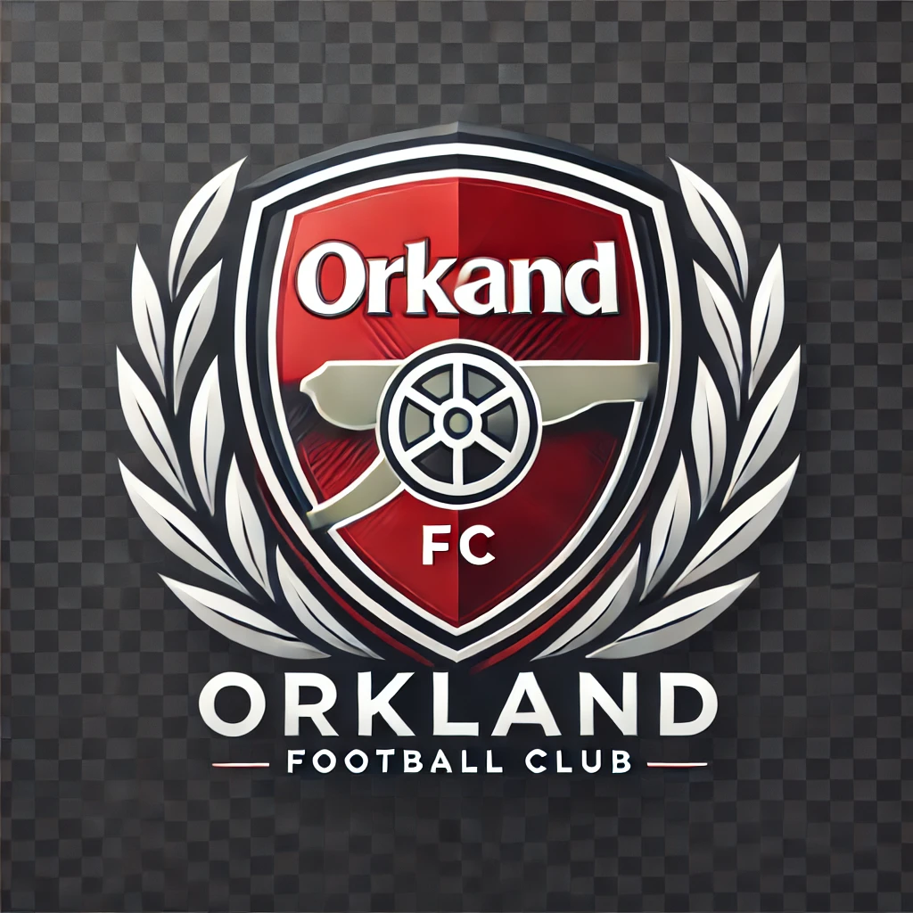

matchday Preview: Orkland FC vs Shabana FC
Orkland prepares to face Shabana in what promises to be an exciting encounter. With both teams in top form , fans can expect a thrilling match at the Orkland Stadium.
Date: December 22, 2024
Your Pride, your Passion for Better Tommorow
Orkland Football Club is a professional football club based in Nakuru, Kenya. Founded in 2010, the club has a rich history and is known for its passionate fan base. The team competes in Tournaments and has won numerous trophies.
Mission is to provide our fans with an exhilarating matchday experience and to compete at the highest level of football. We are committed to nurturing young talent and contributing positively to our community.
Orkland prepares to face Shabana in what promises to be an exciting encounter. With both teams in top form , fans can expect a thrilling match at the Orkland Stadium.
Date: December 22, 2024
Bukayo Saka continue to shine as he leads the team in assists this season. His vision and creativity have been pivotal in Orkland's attacking play, making him a fan favorite.
Stats: 7 goals, 10 assists in 10 appearances
In a move to bolster the squad , Orkland has signed promising young midfielder Mikel Merino from the youth academy. The 18-year-old has been shown exceptional potential and will join the first team.
Discover our latest range official merchandise , including jerseys, training gear, and accessories from our Online shop.
Visit our shopto browse our collection and show your supportfor the team.
Looking to partner with us? Click the button below to learn more about sponsorship opportunities with Orkland FC.
Stay updated with all the latest news,fixtures, and behind-the-scenes content. Click the button below to follow us on social media
Purchase your tickets for upcoming matches and be part of the action. Visit our ticketing pagefor more informaion
For inquiries, please reach us via +44 161 444 1894.